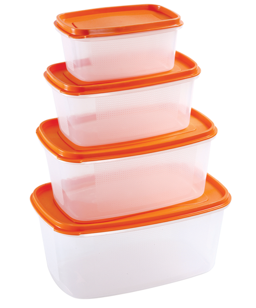

с (Docker 🐳, Podman 🦭, Buildah 🛠️, Коробки 📦 )
Основные понятия
Контейнеризация — это технология, которая позволяет запаковать приложение вместе со всеми необходимыми библиотеками и зависимостями в изолированное окружение, называемое контейнером.

Разворачивание контейнера
Контейнеры могут разворачиваться на серверах любого типа, что делает их универсальными и позволяет запускать контейнер с минимальной настройкой сервера — всё, что требуется, уже находится внутри контейнера.
Контейнер можно развернуть на :
- Облачные серверы ☁️
- Выделенные серверы (VDS/VPS) 🖥️
- Локальные машины 🖥️🏠 ё
Технологии контейнеризации
Docker 🐳
- Позволяет создавать, развертывать и управлять контейнерами.
- Docker использует образы для создания контейнеров.
- Docker Hub
Установка Docker на сервер
sudo apt updatesudo apt install docker-ce